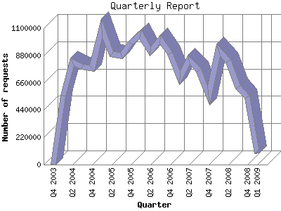

The Quarterly Report shows total activity on your site for each quarter of a
year. Remember that each page hit can result in several server requests as the
images for each page are loaded.
Note: Most likely, the first and
last quarters will not represent a complete quarter's worth of data, resulting
in lower hits.

| Quarter | Number of requests | Number of page requests | |
|---|---|---|---|
| 1. | Q1 2009 | 87,887 | 8,938 |
| 2. | Q4 2008 | 541,859 | 54,381 |
| 3. | Q3 2008 | 623,332 | 52,709 |
| 4. | Q2 2008 | 834,923 | 60,657 |
| 5. | Q1 2008 | 924,855 | 56,973 |
| 6. | Q4 2007 | 553,036 | 39,990 |
| 7. | Q3 2007 | 761,924 | 52,755 |
| 8. | Q2 2007 | 847,598 | 57,768 |
| 9. | Q1 2007 | 694,914 | 47,541 |
| 10. | Q4 2006 | 894,474 | 64,039 |
| 11. | Q3 2006 | 1,011,035 | 65,246 |
| 12. | Q2 2006 | 915,443 | 72,203 |
| 13. | Q1 2006 | 1,046,491 | 68,891 |
| 14. | Q4 2005 | 979,022 | 63,331 |
| 15. | Q3 2005 | 878,688 | 53,888 |
| 16. | Q2 2005 | 889,933 | 56,326 |
| 17. | Q1 2005 | 1,099,631 | 60,479 |
| 18. | Q4 2004 | 778,099 | 45,646 |
| 19. | Q3 2004 | 786,052 | 44,186 |
| 20. | Q2 2004 | 830,044 | 43,326 |
| 21. | Q1 2004 | 555,278 | 31,091 |
| 22. | Q4 2003 | 4 | 4 |
Most active quarter Q2 2006 : 72,203 pages sent.
Quarterly average: 47842.0869565217 pages sent. 793.237 TB bytes served. 718892.260869565 requests handled.
This report was generated on January 18, 2009 00:22.
Report time frame December 18, 2003 11:34 to January 18, 2009 00:20.